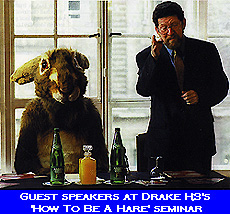

What You Always Wanted To Know About Being A Hare But Were Too Afraid To Ask
INDEX:
haring : selecting
a location
: choosing
the on down
: scribing : length
of run
: planning
the run : private
land
: making
it interesting
: obstacles : what
to use to lay a trail : number
of hares
: when
to lay the trail
: how
long it takes to lay a trail : laying
a trail to be run in the dark : remembering
the route
: keeping
the start and finish seperate : problem trails : check
points
: check
points with no false trails : loops : back
checks
: long
/ short splits
: arrows : haring
the run
: cutting
short the trail
: checking
runners in
: collecting
subscriptions
: if
it all goes wrong....
Haring
Take your turn at being a hare. If you are new to laying a trail
or need someone to help you, please ask. There are plenty of
experienced trail layers on the hash who will be only too pleased
to help - but it may cost you at least one pint of beer! [^
index]
Selecting A Location
Find a suitable area which you already familiar with or get to
know somewhere new. A 1:25,000 Ordnance Survey map or orienteering
map can be used to help you plan your run. Don’t choose
a route that is so restricted that it is clear where it is going
to go. A good hash keeps the hounds guessing! Make the start
location the best place for the run, which in most cases is unlikely
to be the pub.
Let the Hare Raiser know well in advance where your run is going to be. If you change your start or on down at the last minute make sure everyone is told of the new location (this may even involve phoning them up). [^ index]
Choosing The On Down
Find a suitable pub near to your run as the on down. If you have
not been there before pay it a visit to see what it is like.
Check with the landlord or landlady that it is okay for the hash
to come there and tell them the date of the run, the time the
hash will be arriving, the approximate number of hashers who
will be turning up and make sure that bar food is available.
Find out whether dogs are allowed in. A good hash pub has Real
Ale, reasonably priced wholesome food and a welcoming atmosphere.
[^
index]
Scribing
Please take your turn at scribing the hash mag. You will normally
be asked to write
about the run two weeks before your own hash. At the on down,
go around to everyone and ask them if they know of anything that
happened on the run or after it that you can write about. Mention
as many names in the mag as possible: Everyone likes seeing their
name in print - even if what is written about them is less than
complementary!
Having written
and photocopied your masterpiece, it should be handed out in
the pub after the following week’s run (one week before
your own). It is important to keep up the tradition of providing
a hash mag because everyone likes to read what has been written,
it helps to maintain the hash spirit, it provides a history of
Drake H3 and most importantly, it lets everyone know where your
run is going to be!
[^ index]
Length Of Run
Traditionally, Drake Hash House Harriers runs last about an hour,
and are normally
approximately four to four and a half miles in length. [^
index]
Planning The Run
Check out the route of the run before laying the trail by walking
or running it at least once (preferably twice or more). Make
sure most of it is suitable for running. Difficult terrain such
as through boulder fields, wooded thickets or bogs can be used
to slow the pack, but should only be used for relatively short
distances. The hounds want to be able to run most of the hash,
and so will not thank a hare who lays a run where the footing
is excessively difficult or which includes large amounts of gorse,
brambles, stinging nettles or bracken. [^ index]
Private Land
If it is your intention to lay a trail over private land (i.e.
not on a public footpath), make sure that you have the owner’s
permission to do so. [^ index]
Making It Interesting
Try to incorporate into the trail any interesting landscape features
such as hut circles,
ruins, standing stones, tors, pools, leats etc. Remember, you
will be showing off an
area to people who may not know it, and so it will greatly add
to their enjoyment if they encounter something new and interesting.
[^
index]
Obstacles
Make full use of swampy areas, streams, rivers, mud etc. to add
variety to your trail. However, please bear in mind that as hare
you are responsible for the safety of the runners on your hash
and so you should make sure that any obstacles can be crossed
without danger. Rivers rise very quickly on Dartmoor and so it
is better not to use river crossings if heavy rain is forecast.
If you do have any river crossings, try to have a contingency
plan available for an alternative route if on the night of the
hash they appear to be too dangerous to attempt. [^
index]
What To Use To Lay A Trail
Trails can be laid in sawdust, wood shavings, flour, chalk or
lime. Sawdust or wood
shavings are probably the best, because as natural products they
are environmentally friendly, cannot be eaten by animals, and
withstand the rain quite well. If they have a softwood origin
they show up much better than if they come from a hardwood source.
Flour has the advantage that only a relatively small amount is
needed for a trail because it shows up very well, but the disadvantages
are that it is easily washed away by the rain and can be eaten
by animals. Powdered chalk is quite good for laying trails but
can be difficult to obtain. Some hashes lay their runs in lime,
but this is to be avoided if at all possible, because it can
burn the skin and eyes, and damages the countryside. [index]
Number Of Hares
It is desirable to have more than one hare, although not absolutely
necessary if the
trail is well laid. The advantage of having two hares (or more)
is that when laying the trail there is someone to help carry
the sawdust and to assist with setting loops, check backs etc.
Another benefit is that on the night of the hash one person can
accompany the front runners to ensure that they take the correct
route and do not shortcut, whilst someone else is available to
help those at the middle / back of the pack to find the trail
or to suggest shortcuts. [^ index]
When To Lay The Trail
Most trails are normally laid on the Sunday before the run, although
there are some
people able to do it on the Monday of the hash. Any earlier than
Sunday means that the sawdust is vulnerable for longer to the
weather and to vandalism. If you are laying your hash in summer
in an area which is heavily used by the public, you may find
that it is less likely to be damaged if you lay the trail later
in the day after people have gone home.
Some of Drake’s runs are ‘live hare’ runs, where the hare sets off approximately half an hour to an hour before the hounds. These hashes are normally laid in flour because it shows up well and enough for a whole trail can be carried by one person. To be successful this type of run requires an experienced hare who is also a fast runner in order to minimise the possibility of them being caught by the hounds and so ending the hash early. [^ index]
How Long It Takes To Lay A Trail
Laying a trail should normally take two or more hares about two
to two and a half hours to complete (providing you do not have
to return to your car to collect sawdust). Twelve to fifteen
supermarket carrier bags of sawdust should be enough for one
trail. Stuff as many bags as possible into a rucksack and carry
what else you can manage. [^ index]
Laying A Trail To Be Run In The Dark
If your hash is going to be run in the dark, ensure that the
individual drops of sawdust are about ten paces apart. Leaving
longer gaps can result in the hounds not being able to follow
the trail. Wind, rain and fallen leaves can all obscure or obliterate
the sawdust, and so long gaps between drops only makes matters
worse. In foggy conditions the hounds need to be able to see
the next drop of sawdust if they are not to get lost. It is much
better to trick people with check backs, back checks and loops
when they are on the trail, rather than for them not to be able
to find it at all! [^
index]
Remembering The Route
When laying a hash, look out for landmarks or memorable features
in the countryside that you can use to help you to find the trail
again during the run. This is invaluable if the hounds need your
help to locate it (particularly in the dark).
[^
index]
Keeping The Start And
Finish Separate
When laying your run, make sure that the hounds cannot pick up
the end of the trail at the start and then run it the wrong way.
Try to ensure that the different parts of the trail are not too
close together, otherwise the hounds may discover the wrong section
and end up following it. If you see this starting to happen during
the hash call those involved back. Unfortunately, this is easier
said than done. [^
index]
Problem Trails
Don’t try to be too ambitious with your trail by attempting
to cover a lot of ground, or by laying runs which are ‘out
and back’. Definitely avoid road runs. Trails which attempt
to cover a large area are more likely to go wrong. In addition,
any delays in the hounds finding the sawdust mean that the run
can easily go over the hour. Out and back runs, where the trail
heads straight out then is reversed half way through, are not
to be recommended as anyone getting injured near the half way
point will have a very long walk back to the cars (for which
you will not be thanked). Such runs also tend to be rather boring.
Never, ever, lay a road run - Drake H3 does not run on the roads.
Relatively short stretches of road can be used, for connecting
up footpaths or at the start or end of a run, but any more than
this will not be appreciated! [^ index]
Check Points
Your hash should include frequent check points (indicated by
a circle) where the hounds have to look for the correct trail
amongst several possibilities. False trails should be laid for
a distance of anything up to two hundred metres away from the
check. Indicate that a trail is false by laying a cross at the
end of it. Once the hounds
have discovered the correct route from a check, make sure that
the check circle is
kicked through in that direction. This will enable any backmarkers
who arrive at the
check to immediately see where the trail goes and so help them
to catch up with the rest of the hash. [^ index]
Check Points With No False Trails
Occasionally check points can be laid with only the correct trail
marked. The hounds
will expect there to be false trails and will spread out in all
directions to look for them. It therefore means that in order
to slow the pack, the trail must not be too easy to discover.
Consequently, this type of check works best on a daylight hash
or when the correct trail is laid on a clear footpaths or tracks.
Making the trail hard to find in the dark can mean that it can’t
be found at all! [^
index]
Loops
Include plenty of loops in the trail so that the faster runners
have to double back.When the slower runners see them coming back
again they will be able to shortcut and join up with them. Don’t
lay trails which go in a straight line for any distance because
the slower runners will be left behind and it will be very difficult
for them to catch up.
Loops are particularly useful on hills because the front runners can be tricked into running up the slope, only to have to come back down again relatively close to where they started. The slower runners will be able to see or hear the front runners returning and so be able to shortcut, thus avoiding having to climb the hill themselves.
If you use the
above tactics when laying your trail there is a good chance that
you will keep the hash together. However, be careful that the
out and back parts of the loop are not too close together, otherwise
the front runners will see the trail returning and shortcut.
On the other hand, the out and back of the loop must not be too
far apart, otherwise the slower runners will not be able to shortcut.
[^
index]
Back Checks
A good way of slowing down the front runners is to lay the sawdust
in such a way as to make them over-run the correct trail and
then let them know they have done so by laying a back check.
When they see the back check symbol (a cross in a circle) it
means that they must retrace their steps and look for the correct
trail somewhere off to the left or right of the trail they are
on. The change of direction can have occurred anywhere between
the previous check point and the back check itself. As the front
runners have to run back the way they came to try to find the
trail, it means they should meet up with the slower runners who
were previously behind them. [^ index]
Long / Short Splits
Long / short splits can be used to give a longer or harder run
to those who want it,
whilst those with more sense can take a less demanding route.
The direction of each type of trail is indicated by arrows with
an ‘L’ and ‘S’ against them. Sawdust should
be laid for each route and they should both join up later on.
In order that the hash does not spend too much time apart, it
is probably best not to have more than two long / short splits
per trail. [^
index]
Arrows
Lay an arrow to indicate the direction of the trail if there
is any likelihood of confusion occurring e.g. when long and short
trails rejoin, to indicate the safest point for a river crossing
etc. Near to the end of the trail lay an ‘On Home’
arrow to let the hounds know the end is nigh. [^ index]
Haring The Run
On the evening of your hash it is useful if you to get to the
start early so that you can deal with any problems that crop
up (like finding hashers who have gone to the wrong car park
etc.). Before setting off, count the number of runners and if
there are any new runners, find out their names and which cars
they came in, so that you can check that they have returned safely
after the hash has finished.
During the run you should try to ensure that the hounds can find the trail. However, please give them adequate time to find it for themselves before pointing out to them where it is.
If you see someone disappearing off into the distance in entirely the wrong direction and it is clear that they won’t be returning unless they are called back, either go after them yourself or arrange someone else to run after them (after telling the rescuer where the trail goes).
Advise those that need them of any short cuts and try to make sure that the front runners do not shortcut loops. Make sure that all the checks are kicked through in the right direction. Call ‘On On’ when the correct trail is discovered so that everyone knows where it is. [^ index]
Cutting Short The Trail
If it looks as if your trail is in danger of lasting well over
the hour do not be afraid to
shorten it by showing the hounds short cuts they can take or
even by telling them the quickest way back to the cars. However,
use your judgement, people are less likely to want to cut short
a run on a warm summer’s evening than they might during
a torrential downpour in February. If you are not keen on verbal
abuse, for your own sake, try not to lay runs lasting over an
hour just after Christmas or in early January when people are
likely to be at their least fit. [^ index]
Checking Runners In
Once the run is over, it is the hare’s job to check that
everyone who set off on the hash has returned safely. If someone
is missing, wait for about ten minutes then organise search parties.
Ideally, each search party should have a mobile phone to keep
in contact with each other as well as with someone acting as
‘control’ back at the car park. In this way everyone
will know when the missing person has returned or has been found.
[^
index]
Collecting Subscriptions
At the on down after the run, enjoy the congratulations of your
fellow hashers for a job well done (or not as the case may be),
then relieve them of their money, because, as hare, you are responsible
for the collection of the hash subscriptions. Tick the paid runners
off on the hash list then give the list and money to the Hash
Cash. [^
index]
If It All Goes Wrong....
Don’t worry, no trail ever goes entirely to plan. As long
as you have tried your best and everyone returns safe and sound
after having a run in the countryside then that is all that really
matters (you will know how successful your run was from the amount
of abuse you get from the hounds - the more abuse, the better
the run). If your run didn’t work out as you would have
liked, think of how it could have been improved then include
the improvements in your next run. No one gets to be a good at
it straight away - practice really does make for the perfect
lay! [^
index]
| < on back |